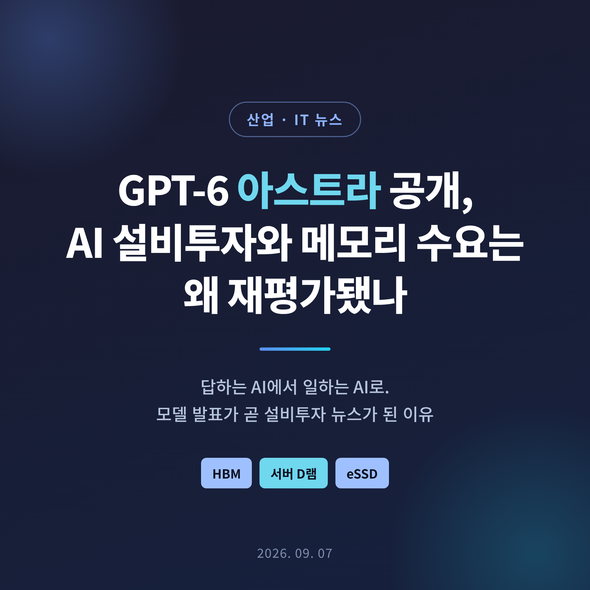
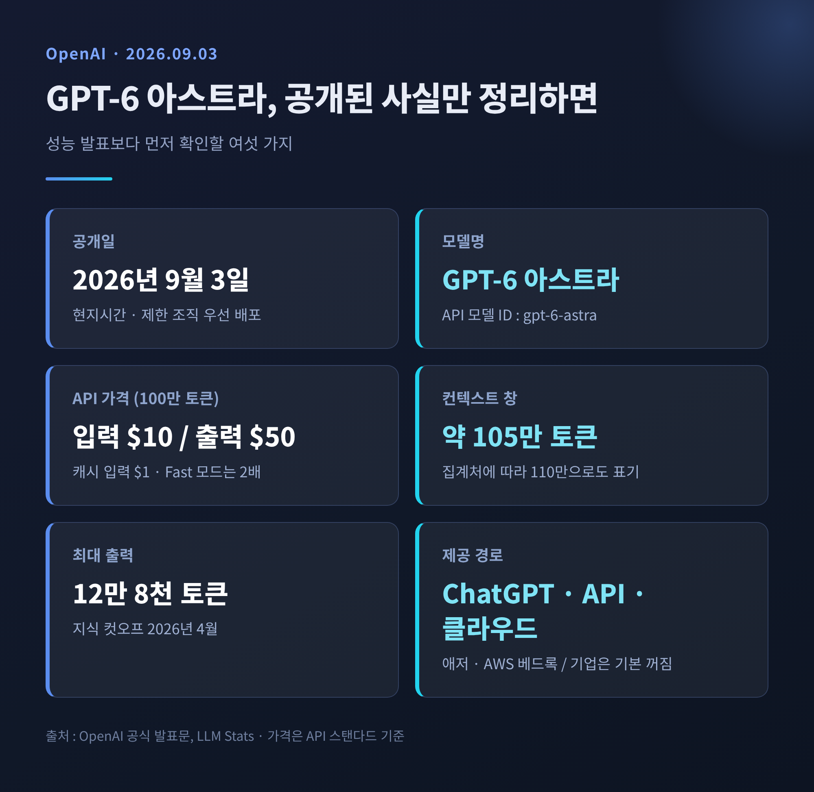
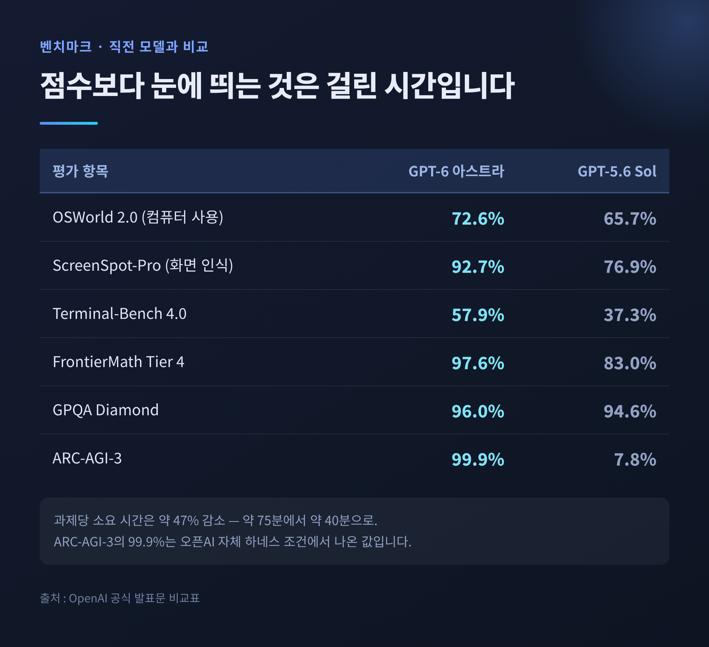
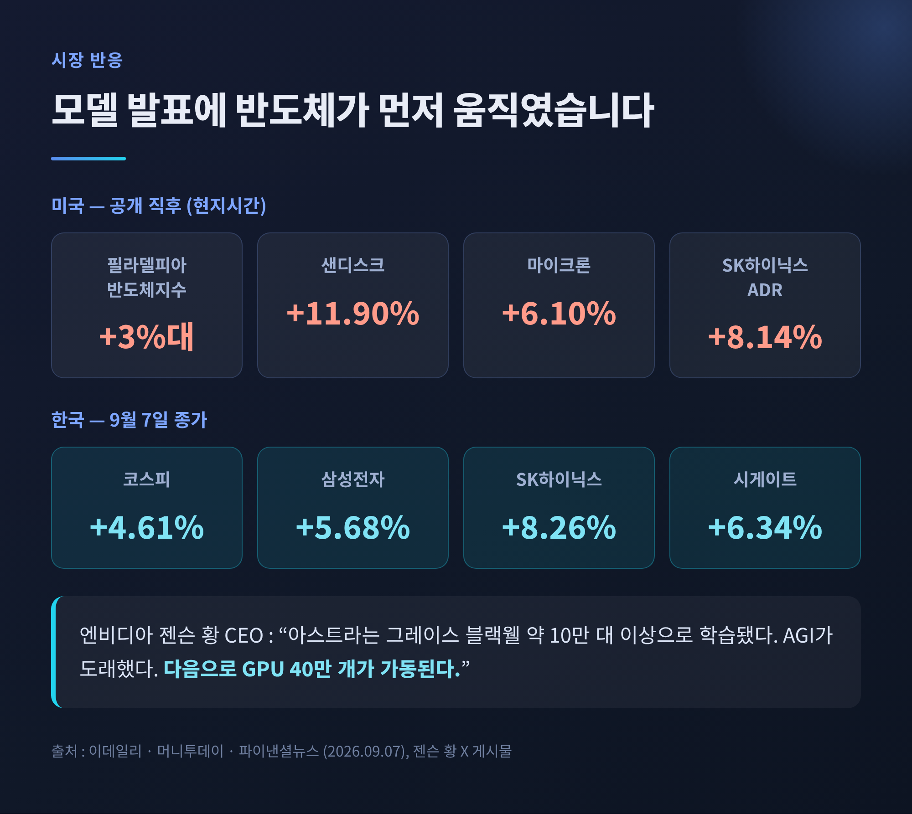
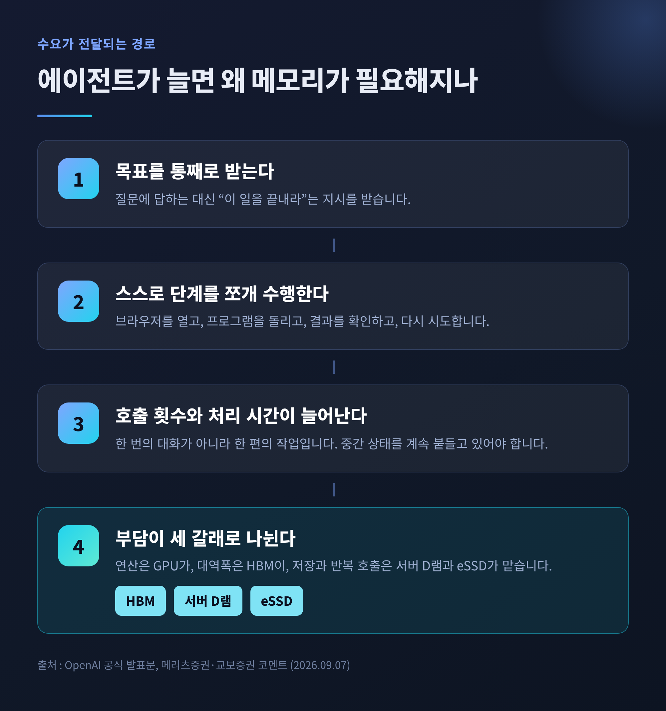
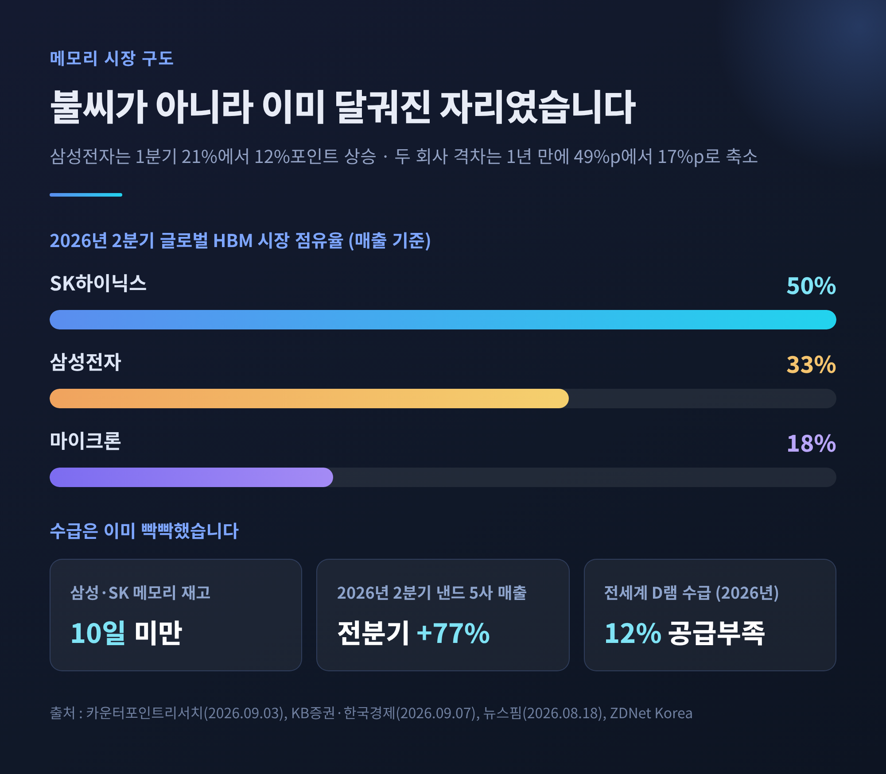
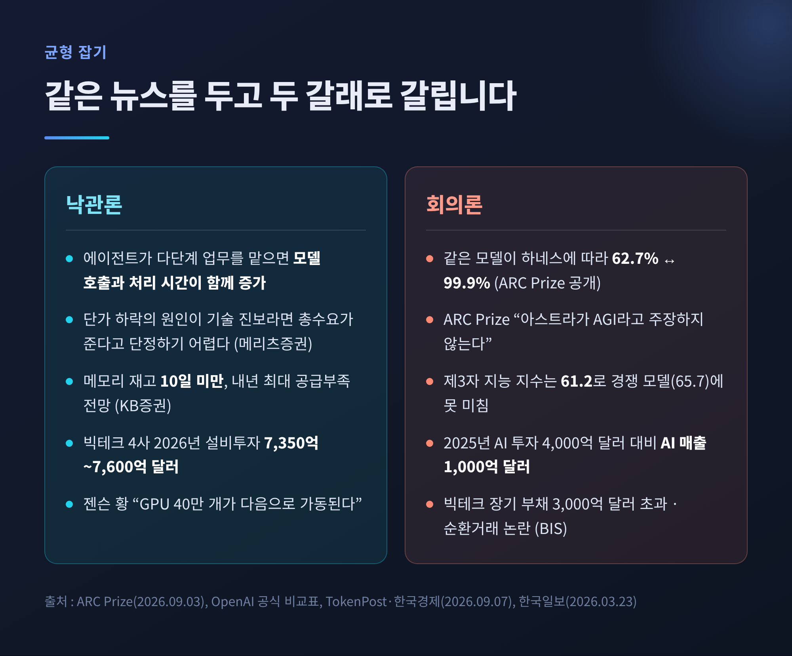

GPT-6 아스트라 공개, AI 설비투자와 메모리 수요는 왜 재평가됐나
이번 글에서는 오픈AI가 공개한 GPT-6 아스트라가 왜 곧바로 반도체 이야기로 번졌는지 정리해 보겠습니다. 모델의 성능표보다는 그 성능이 설비투자와 메모리 수요 사이클에 어떤 신호를 던졌는지에 초점을 맞췄습니다.

세 줄 요약
- 오픈AI는 2026년 9월 3일(현지시간) GPT-6 아스트라를 공개했습니다. 핵심 변화는 성능 수치가 아니라 컴퓨터를 직접 조작해 여러 단계 업무를 끝까지 수행하는 에이전트 능력입니다.
- 공개 직후 필라델피아반도체지수가 3%대 올랐고, 9월 7일 국내 증시에서 삼성전자는 5.68%, SK하이닉스는 8.26% 상승 마감했습니다.
- 다만 벤치마크 조건에 따라 같은 모델 점수가 62.7%에서 99.9%까지 벌어진 사례가 공개돼, 낙관론과 회의론이 함께 서 있는 상태입니다.
무슨 일이 있었나
오픈AI는 2026년 9월 3일(현지시간) 새 플래그십 모델 GPT-6 아스트라를 내놓았습니다.
배포 방식부터 짚겠습니다. 공식 발표문에 따르면 첫날에는 제한된 수의 조직에만 열렸습니다. 이후 며칠에 걸쳐 ChatGPT 플러스·프로·비즈니스·엔터프라이즈 사용자와 오픈AI API, 마이크로소프트 애저, AWS 베드록으로 확대되는 순서였습니다. 기업 워크스페이스에서는 출시 시점 기본값이 '꺼짐'입니다.
발표 자리에서 나온 말이 화제를 키웠습니다. 오픈AI 사장 그렉 브록만은 브리핑을 이렇게 닫았습니다. "AGI 시대에 오신 것을 환영합니다." 그는 아스트라를 "세대적 도약"이라 표현했습니다.
다만 회사 공식 문서에는 "아스트라가 곧 AGI"라는 문장이 없습니다. 공식 표현은 "가장 지능적이고 가장 잘 정렬된 모델"입니다. 이 차이는 뒤에서 다시 다루겠습니다.

무엇이 달라졌나 — 답하는 AI에서 일하는 AI로
아스트라의 방향은 분명합니다. 질문에 답하는 능력보다 일을 끝까지 해내는 능력에 무게가 실렸습니다.
오픈AI가 직접 든 예시는 이렇습니다. 온라인 양식 작성, CRM 고객 기록 갱신, 일정 정리, 온라인 조사 후 이메일이나 문서 편집기에 요약 작성, 과학 데이터 분석과 그래프 생성, 웹사이트 제작과 프런트엔드 품질 점검, 소프트웨어 자율 설치와 문제 해결.
수치도 그 방향을 가리킵니다. 컴퓨터 사용 능력을 재는 OSWorld 2.0에서 아스트라는 72.6%를 기록했습니다. 직전 모델 GPT-5.6 Sol은 65.7%였습니다. 눈여겨볼 대목은 점수보다 시간입니다. 지연시간 시뮬레이션 기준으로 과제당 소요 시간이 약 47% 줄었습니다. 과제 하나에 약 75분 걸리던 일이 약 40분으로 내려왔습니다.
화면 요소를 짚어내는 ScreenSpot-Pro는 92.7%로, 76.9%였던 이전 모델과 차이가 큽니다. 터미널 작업을 다루는 Terminal-Bench 4.0은 37.3%에서 57.9%로 올랐습니다.
가격은 API 기준 입력 100만 토큰당 10달러, 출력 100만 토큰당 50달러입니다. 컨텍스트 창은 집계처에 따라 약 105만에서 110만 토큰으로 표기됩니다.

시장은 왜 반도체부터 샀나
공개 직후 반응은 소프트웨어가 아니라 하드웨어 쪽에서 먼저 나왔습니다.
미국 증시 전반이 흔들리는 와중에도 필라델피아반도체지수는 3%대 상승했습니다. 메모리와 저장장치 종목이 특히 셌습니다. 샌디스크 11.90%, 시게이트 6.34%, 마이크론 6.10%, 웨스턴디지털 5.86%. SK하이닉스 미국주식예탁증서는 8.14% 뛰었습니다.
국내 차례는 9월 7일이었습니다. 코스피는 4.61% 오른 6,995.39로 마감해 7,000선을 4.61포인트 남겨뒀습니다. 삼성전자는 5.68% 오른 27만 원, SK하이닉스는 8.26% 급등한 178만3,000원이었습니다. SK하이닉스는 12거래일 동안 밀렸던 주가를 하루 만에 되돌렸습니다.
여기에 엔비디아 젠슨 황 CEO의 글이 기름을 부었습니다. 그는 9월 6일 엑스에 아스트라가 엔비디아 그레이스 블랙웰 NVLink72 약 10만 대 이상으로 학습됐다고 적으며 "AGI가 도래했다"고 썼습니다. 그리고 한 문장을 덧붙였습니다. "다음으로 GPU 40만 개가 가동된다."
시장이 산 것은 모델이 아니라 이 마지막 문장이었다고 보는 편이 정확합니다.

에이전트가 늘면 왜 메모리가 필요한가
연결고리를 풀어보겠습니다.
예전 모델은 사용자가 질문하면 답을 만들고 끝났습니다. 지금 아스트라는 목표를 받으면 스스로 단계를 쪼개고, 브라우저를 열고, 프로그램을 돌리고, 결과를 확인한 뒤 다시 시도합니다.
한 번의 대화가 아니라 한 편의 작업입니다. 모델 호출 횟수가 늘고, 처리 시간이 길어지고, 중간 상태를 어딘가에 계속 붙들고 있어야 합니다.
이 부담은 세 곳에 나뉘어 떨어집니다. 연산은 GPU가, 연산에 붙는 대역폭은 고대역폭메모리(HBM)가, 데이터를 담고 반복해 꺼내는 일은 서버용 D램과 기업용 SSD(eSSD)가 맡습니다. 증권가가 이번 발표를 두고 HBM·서버 D램·eSSD를 함께 거론한 이유가 여기에 있습니다.
메리츠증권은 조금 다른 각도를 덧붙였습니다. 7월 이후 토큰 가격이 내려가면서 AI 하드웨어 주가가 밀리고 소프트웨어 주가가 오르는 흐름이 있었는데, 토큰 값을 낮춘 요인이 과열 경쟁이 아니라 기술 진보라면 하드웨어 총수요가 줄어든다고 단정하기 어렵다는 것입니다. 같은 비용으로 더 많은 일을 맡길 수 있게 되면 사용량 자체가 늘기 때문입니다.
교보증권도 비슷한 결을 짚었습니다. 성능이 좋아지고 도입 부담이 낮아져 새로운 사용량이 계속 생긴다면, 이를 처리할 서버와 메모리 수요도 함께 커질 수밖에 없다는 진단입니다.

원래도 빡빡했던 수급 — 불씨에 던져진 장작
이번 뉴스가 크게 읽힌 데는 배경이 있습니다. 메모리 수급은 이미 타이트했습니다.
삼성전자와 SK하이닉스의 메모리 재고는 10일 미만까지 내려와 있습니다. KB증권은 내년 메모리 시장에 "역사상 가장 타이트한 공급 환경"이 펼쳐질 것으로 봤습니다.
구조적 이유가 있습니다. HBM4 생산을 늘릴수록 범용 D램에 돌릴 여력이 줄어듭니다. 한쪽을 채우면 다른 쪽이 빕니다. 전 세계 D램 수급은 2025년 8% 공급과잉에서 2026년 12% 공급부족으로 돌아설 것으로 전망됐습니다.
낸드도 같은 방향입니다. 2026년 2분기 상위 5개 낸드 업체의 합산 매출은 688억7,000만 달러로 전 분기보다 77% 늘었습니다. 삼성전자의 낸드 매출은 약 230억6,000만 달러로 70.7% 증가했습니다. 샌디스크 CEO는 "고객 수요가 공급을 초과하고 있으며, 공급은 2027년 이후까지도 할당제로 유지될 것"이라고 말했습니다.
국내 두 회사의 자리도 지난해와 다릅니다. 카운터포인트리서치 집계로 2026년 2분기 HBM 시장은 SK하이닉스 50%, 삼성전자 33%, 마이크론 18%였습니다. 삼성전자는 1분기 21%에서 12%포인트 올랐고, 두 회사 격차는 1년 전 49%포인트에서 17%포인트로 좁혀졌습니다.
전방 투자 규모도 짚어두겠습니다. 아마존·알파벳·메타·마이크로소프트의 2026년 설비투자 계획은 합산 7,350억~7,600억 달러로 집계됩니다. 데이터센터 전체로는 1조 달러를 넘어설 것이라는 전망도 나와 있습니다.

반대편의 목소리도 들어야 합니다
여기서 균형을 잡겠습니다. 이 랠리를 그대로 믿기 어렵게 만드는 근거가 여럿입니다.
첫째, 벤치마크입니다. 아스트라는 ARC-AGI-3에서 99.9%를 기록했다고 알려졌습니다. 그런데 이 수치를 낸 ARC Prize 재단이 함께 공개한 자료가 흥미롭습니다. 공급자 중립 조건인 표준 하네스에서는 같은 모델이 62.7%였습니다. 오픈AI의 추론 상태 보존 기능을 허용한 조건에서만 99.9%가 나왔습니다. 같은 모델, 다른 껍데기, 37%포인트의 간극입니다.
ARC Prize는 선을 분명히 그었습니다. 이 벤치마크를 포화시키는 것이 AGI 달성의 증거는 아니며, 자신들은 아스트라가 AGI라고 주장하지 않는다고 밝혔습니다. 환경이 닫혀 있고 규칙이 결정적이어서 현실 세계의 복잡성을 대표하지 않는다는 설명도 함께 실렸습니다.
둘째, 오픈AI가 스스로 낸 표 안에도 불리한 칸이 있습니다. 제3자 지표인 아티피셜 애널리시스 지능 지수에서 아스트라는 61.2로, 클로드 페이블 5.1의 65.7보다 낮습니다. 코딩 에이전트 지수도 67.0으로 클로드 오퍼스 5의 68.1에 못 미칩니다. 모든 항목을 압도한 것은 아니라는 뜻입니다.
셋째, 설비투자의 지속 가능성입니다. 주요 클라우드 기업이 2025년 AI에 4,000억 달러를 썼지만 실제 AI 매출은 1,000억 달러 수준이었다는 지적이 있습니다. 하이퍼스케일러가 AI 기업에 돈을 대고 그 돈이 자사 클라우드·반도체 구매로 돌아오는 순환거래 구조를 문제 삼는 시각도 여전합니다. 국제결제은행(BIS) 보고서는 주요 빅테크의 장기 부채가 3,000억 달러를 넘어 10년 내 최고 수준이라고 짚었습니다.
넷째, 국내 증시 자체의 부담입니다. 메리츠증권은 메모리 재평가 가능성을 인정하면서도, 전체 시장에 대해서는 10월 중순까지 보수적 시각을 유지한다고 밝혔습니다. 고금리 불안이 남아 있고 3분기 실적 발표를 앞두고 원화 강세에 따른 이익 전망 하향을 소화해야 한다는 이유였습니다.

무엇을 확인하며 볼 것인가
앞으로의 관전 포인트는 비교적 또렷합니다.
가장 가까운 일정은 9월 10일입니다. 젠슨 황의 골드만삭스 기술 콘퍼런스 발언이 있고, 같은 날 장 마감 후 오라클 실적이 나옵니다. 이 둘이 AI 투자 향방을 가늠할 다음 분수령으로 꼽힙니다.
그다음은 예고된 GPU 40만 개가 실제로 집행되는지입니다. 발언은 무료이지만 발주는 그렇지 않습니다. 계약과 가동 일정이 확인돼야 메모리 주문으로 내려옵니다.
세 번째는 아스트라의 실제 사용량입니다. 기업 워크스페이스 기본값이 꺼져 있으므로, 확산 속도는 조직별 승인 속도에 달려 있습니다. 발표된 성능이 아니라 켜진 계정 수가 수요를 만듭니다.
네 번째는 HBM4입니다. SK하이닉스는 최상위 등급 제품의 재설계에 들어갔고 공급 여부는 연말께 결정될 예정입니다. 삼성전자는 3분기 중 평택·화성의 1c D램 라인 가동률을 끌어올릴 계획입니다. 여기서 갈리는 점유율이 내년 손익을 가릅니다.
이 글은 정보 정리를 목적으로 하며 특정 종목에 대한 투자 권유가 아닙니다. 언급된 주가와 전망치는 각 출처가 밝힌 시점의 값이며, 이후 상황에 따라 달라질 수 있습니다.
정리하면 이렇습니다.
이번 사안의 무게는 아스트라가 얼마나 똑똑한가에 있지 않습니다. AI가 사람의 질문에 답하는 자리에서 사람의 업무를 대신 수행하는 자리로 옮겨 앉으면, 그 작업을 담을 그릇이 훨씬 많이 필요해집니다. 그 그릇이 HBM이고 서버 D램이고 eSSD입니다.
예전에는 모델 발표가 소프트웨어 뉴스였습니다. 지금은 그것이 곧 설비투자 뉴스로 읽힙니다.
물론 확정된 것은 아직 없습니다. 하네스 하나를 바꿨더니 점수가 37%포인트 흔들렸다는 사실은 잊지 않는 편이 좋겠습니다. 발표된 숫자와 집행된 주문은 다른 것입니다.
"모델이 답을 만들 때는 GPU가 바빴고, 모델이 일을 할 때는 메모리가 바쁘다."
이번 랠리가 사이클의 시작이었냐고 물으신다면, 저는 아직 답을 미루겠습니다. 다만 질문의 자리가 바뀌었다는 것만은 분명해 보입니다.